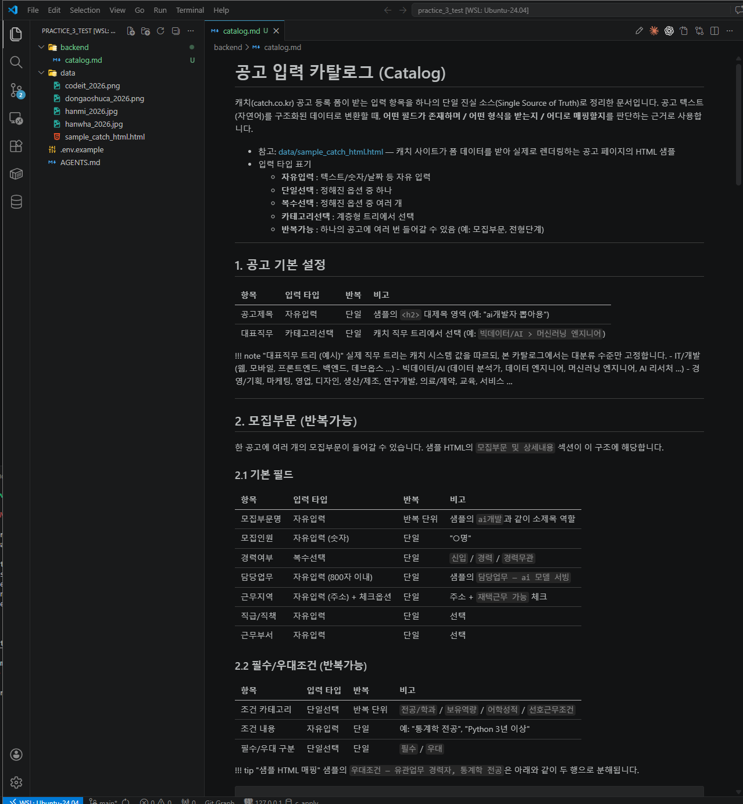
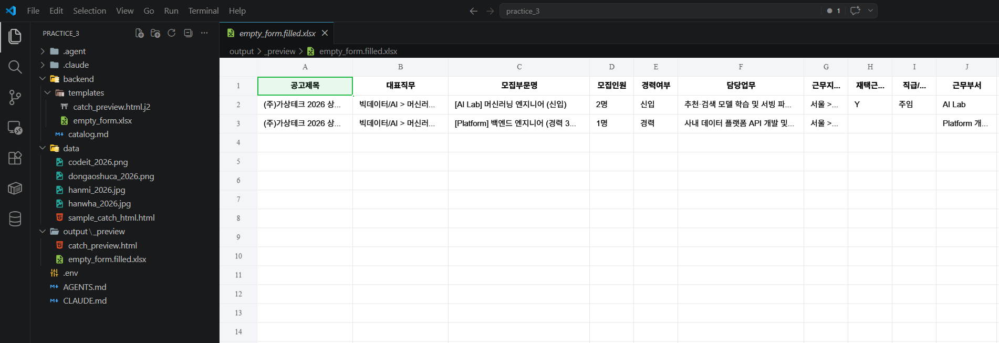

1 · 결과 담을 빈 양식 만들기¶
자동화의 첫 발은 결과가 들어갈 빈 그릇을 먼저 만드는 것입니다. 캐치 폼이 어떻게 생겼는지 정리한 카탈로그를 만들고, 다음 단계에서 이미지가 처리되면 채워질 빈 엑셀과 HTML을 미리 만들어둡니다. 마지막에 가짜 데이터를 한 번 채워서 직접 열어 확인합니다.
이 단계의 목적
- 캐치 폼의 모든 항목을 정리한 카탈로그 만들기
- 결과가 채워질 빈 엑셀과 빈 HTML 두 양식 만들기
- 가짜 데이터를 한 번 채워서 직접 열어 확인 — 다음 단계에서 채워질 그릇이 어떻게 생겼는지 손에 잡히게
1-1. 카탈로그 정리¶
캐치 폼에 들어가는 모든 입력 항목을 프롬프트에 직접 나열해서 카탈로그를 만들어달라고 부탁합니다.
왜 이게 필요해요?
AI는 캐치 폼이 어떻게 생겼는지 모릅니다. 한 번 프롬프트로 정리해두면 이후 단계에서 계속 참조할 수 있는 카탈로그 파일이 생겨요. 본인 업무에 응용할 때도 "우리 업무에서 쓰는 양식은 이러이러해" 하고 나열하는 이 패턴이 그대로 쓰입니다.
프롬프트에 꼭 담을 것 ✅¶
- 폼 전체 항목 — 캐치 폼의 모든 입력 항목을 섹션별로 나열 (공고기본·모집부문·자격조건·채용절차·담당자·복리후생·기타정보)
- 항목 유형 표기 — 각 항목이 자유 입력 / 옵션 선택 / 카테고리 선택 / 반복 가능 중 무엇인지 표로 정리해달라고 요청
- 옵션 전부 나열 — 선택지가 정해진 항목은 옵션을 빠짐없이. 복리후생처럼 계층형은 카테고리 트리로
- 예외·정규화 규칙 — 카탈로그에 없는 입력의 행선지(예: 기타정보), 동의어 정규화(예: "정직원"→"정규직")
- 분리 규칙 — 한 공고에 여러 직군이 섞이면 사업부문 단위로 모집부문 분리
- 참고 파일 —
@data/sample_catch_html.html
예시 프롬프트 (캐치 폼 항목 전체 포함 — 펼쳐보기)
아래 캐치 폼 항목을 backend/catalog.md 로 정리해줘.
각 항목이 자유 입력/옵션 선택/카테고리 선택/반복 가능 중 무엇인지 표로,
선택지가 있으면 옵션 전부(복리후생 같은 계층형은 트리로),
카탈로그에 없는 입력의 행선지·동의어 정규화·직군 여러 개면 사업부문 단위
모집부문 분리 규칙도 함께. @data/sample_catch_html.html 참고.
[공고 기본] 공고제목(자유), 대표직무(직무 트리 선택)
[모집부문] (여러 개 가능) 모집부문명, 모집인원, 경력여부(신입/경력/무관),
담당업무, 근무지역(+재택 옵션), 필수·우대조건, 직급/직책, 근무부서
[자격조건] 학력(드롭다운+재학/졸업예정 옵션),
고용형태(정규/계약/인턴/파견/교육생, 정규직은 수습기간),
급여(연봉/월급/시급+범위+회사내규/면접후결정 옵션), 근무시간
[채용절차] 접수기간(+상시/마감 옵션), 게재예약일, 접수방법(복수),
전형단계(순서+유형: 서류/면접/인적성/레퍼런스), 이력서, 자기소개서
[담당자] 이름·부서·전화·이메일(노출 여부), 인담Q&A
[복리후생] (카테고리별 복수) 보상·수당 / 휴가·휴직 / 사내시설 / 생활·건강
[기타정보] 기업 소개, 유의사항 등 (자유, 500자)이런 결과가 보이면 정상입니다
backend/catalog.md파일이 생겼습니다- 파일을 열어보면 섹션별로 항목 목록이 표로 정리돼있고, 정해진 옵션이 빠짐없이 나열돼있습니다

이상하면?
"복리후생 카테고리가 빠졌어", "옵션 중에 ○○가 누락됐어" 같이 내가 넘겨준 항목 목록과 비교해서 누락된 부분을 알려주세요. 카탈로그를 다듬어줄 겁니다.
1-2. 빈 양식 두 개 만들기 + 가짜 데이터로 확인¶
카탈로그가 만들어졌으면, 그 카탈로그를 바탕으로 결과가 들어갈 빈 엑셀과 빈 HTML을 만듭니다. 그리고 가짜 공고 한 건을 채워보고 직접 눈으로 확인합니다.
왜 가짜 데이터를 한 번 채워보나요?
빈 양식만 보면 "이게 잘 됐는지" 감이 잘 안 옵니다. 가짜 공고 한 건을 넣어서 양식이 어떻게 채워지는지 미리 보면, 다음 단계에서 진짜 공고가 채워질 결과의 모습이 손에 잡힙니다.
프롬프트에 꼭 담을 것 ✅¶
- 빈 양식 3종 (전부
backend/templates/) —empty_form.xlsx(카탈로그 항목이 제목 줄, 아래는 빈칸),catch_preview.html.j2,schema.py - N개 반복 구조 — 모집부문은 한 공고에 1~30개. 각 부문을 카드 박스로,
{% for %}반복으로 감싸 자동 복제 (한 덩어리로 이어지면 안 됨) - 빈 틀 유지 — 템플릿엔
{{ }}자리표시자만, 가짜 글자 금지 - 미분류 보관 — 카탈로그에 없는 값은 버리지 말고
schema.py의 "기타 보관함"으로 - 검증용 가짜 채움 — 모집부문 3개 이상 가짜 공고로 채운 결과는 템플릿과 분리해
output/_preview/에 저장
예시 프롬프트
@backend/catalog.md @data/sample_catch_html.html 참고.
backend/templates/ 에 빈 양식 3종을 만들어줘:
1. empty_form.xlsx — 카탈로그 항목을 제목 줄로, 아래는 비움.
모집부문마다 한 줄로 늘어나는 구조.
2. catch_preview.html.j2 — sample 톤을 따르되, 모집부문 1~30개를
각각 카드 박스로 그리고 {% for d in posting.divisions %} 반복으로
감싸. 값 자리는 {{ }} 자리표시자만, 가짜 글자 넣지 마.
3. schema.py — 카탈로그 옵션만 쓰게 강제, 없는 내용은 "기타 보관함".
그다음 템플릿은 그대로 두고, 가짜 공고(모집부문 3개 이상)로 채운 결과만
output/_preview/ 에 저장해줘 (empty_form.filled.xlsx, catch_preview.html).
3개 이상인 건 N개 카드가 제대로 그려지는지 검증하려는 거야.
끝나면 empty_form.xlsx가 제목 줄만 있는지, .html.j2에 가짜 글자가
없는지 확인하고 결과 파일 경로를 알려줘.이런 결과가 보이면 정상입니다
backend/templates/는 깨끗한 빈 양식만 —empty_form.xlsx는 열 제목만 + 데이터 행 0개,.html.j2는{{ ... }}자리표시자만 + 모집부문이{% for %}반복문으로 감싸져 있음output/_preview/catch_preview.html을 더블클릭하면 브라우저에 모집부문 3개가 각각 카드 박스로 명확히 구분돼 세로로 나열 (카드끼리 테두리·여백으로 분리)

이상하면?
- "HTML에 모집부문 데이터는 있는데 한 덩어리로 이어져 보여" → 각 모집부문을 카드 박스(테두리·여백)로 감싸고 간격 벌려서 N개가 독립 카드로 보이게
.html.j2수정 - "가짜 데이터 3개 넣었는데 HTML에 1개만 보여" → 템플릿에
{% for d in posting.divisions %}...{% endfor %}반복문이 빠졌을 거야. 반복문으로 감싸기 - "
empty_form.xlsx에 가짜 데이터가 박혀있어 /.html.j2에 가짜 글자가 박혀있어" →backend/templates/는 깨끗한 빈 틀만. 가짜 내용 다 지우고 자리표시자로 되돌린 뒤 채운 결과는output/_preview/로 따로 저장 - "엑셀에 카탈로그 항목이 빠졌어" → 카탈로그의 모든 항목이 열로 들어갔는지 재확인
체크포인트¶
-
backend/catalog.md가 만들어졌습니다 -
backend/templates/empty_form.xlsx가 있고, 열 제목만 있고 데이터 행이 0개입니다 (가짜 데이터 섞여있지 않음) -
backend/templates/안의.html.j2템플릿에{{ ... }}자리표시자만 있고 가짜 글자가 직접 박혀있지 않으며, 모집부문 부분이{% for %}반복문으로 감싸져 있습니다 -
output/_preview/안에 가짜 데이터로 채운empty_form.filled.xlsx(3행 이상)와catch_preview.html이 있습니다 -
output/_preview/catch_preview.html을 더블클릭했을 때 브라우저에 모집부문이 3개 이상의 카드로 각자 명확히 구분돼 나열되어 보입니다 (한 뭉치로 이어지지 않음)
다음 단계에서는 이 빈 양식에 진짜 이미지 공고 데이터를 채우는 모듈을 만듭니다.